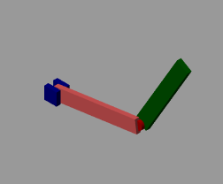

Robotics is defined practically as the study, design and use of robot systems for manufacturing and generally are used to perform highly repetitive, unsafe, hazardous, and unpleasant tasks. Robotics many different functions that used either in industry and manufacture or in complex, clatter and changing environment such as pick and place, assembly, drilling, welding, machine tool load and unload functions, painting, spraying, etc. or in A delivery in a hospital and Hotels, Discovering the space As a results of these different tasks there are different robot arm configuration such as rectangular, spherical, cylindrical, revolute and prismatic jointed. A pick and place robot arm is used to ease process of moving materials and supplying the motion required in the manufacturing processes. The transfer process of the materials is usually being accomplished, using man power and as the transfer process is repeated for a period of time, it can cause injuries to the operator. the robot arm preventing injuries and increasing the efficiency of the work, with reducing the human being errors that cost higly time and martial.
A two degree of freedom robot arm is described in Figure (1)
which consists primarily of two links with the
following specifications in OXY coordinates:
𝐿1 = 1 m is the length of the first link.
𝐿2 = 1 m is the length of the second link.
𝑚1 = 1 kg is the mass of the first link.
𝑚2 = 1 kg is the link of the second link.
𝜃1 = the rotation angel of the first link.
𝜃2 = is the rotation angel of the second link.
The Forward kinematics of a robotic arm is determined a group of parameters called Denavit-Hartenberg (DH) parameters which used for deriving the homogenous transformation matrices between the different frames assigned on the robot arm structure. The DH parameters for a two degree of freedom robotic arm are defined as follows:
| Link | a(i) | alpha(i) | d(i) | Theta(i) |
|---|---|---|---|---|
| 1 | L1 | 0 | 0 | theta(1) |
| 2 | L2 | 0 | 0 | theta(2) |
we Run The model with desired angle of theta1 and we get
